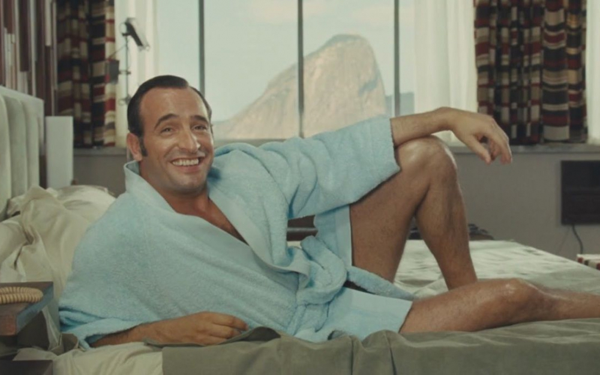
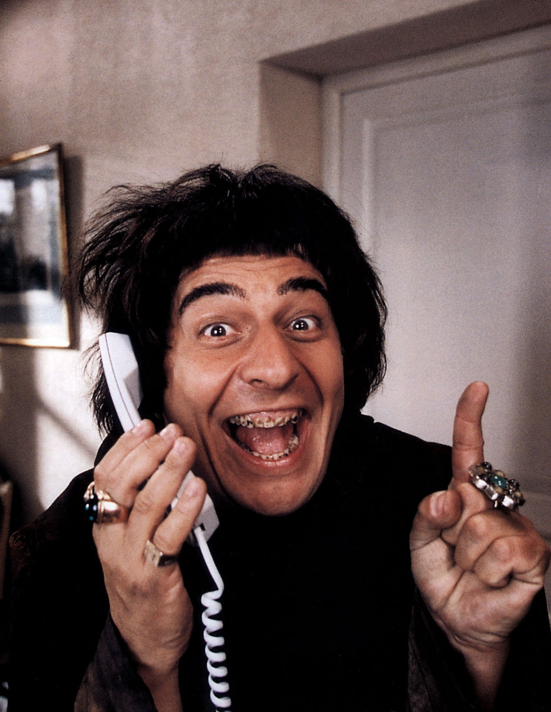
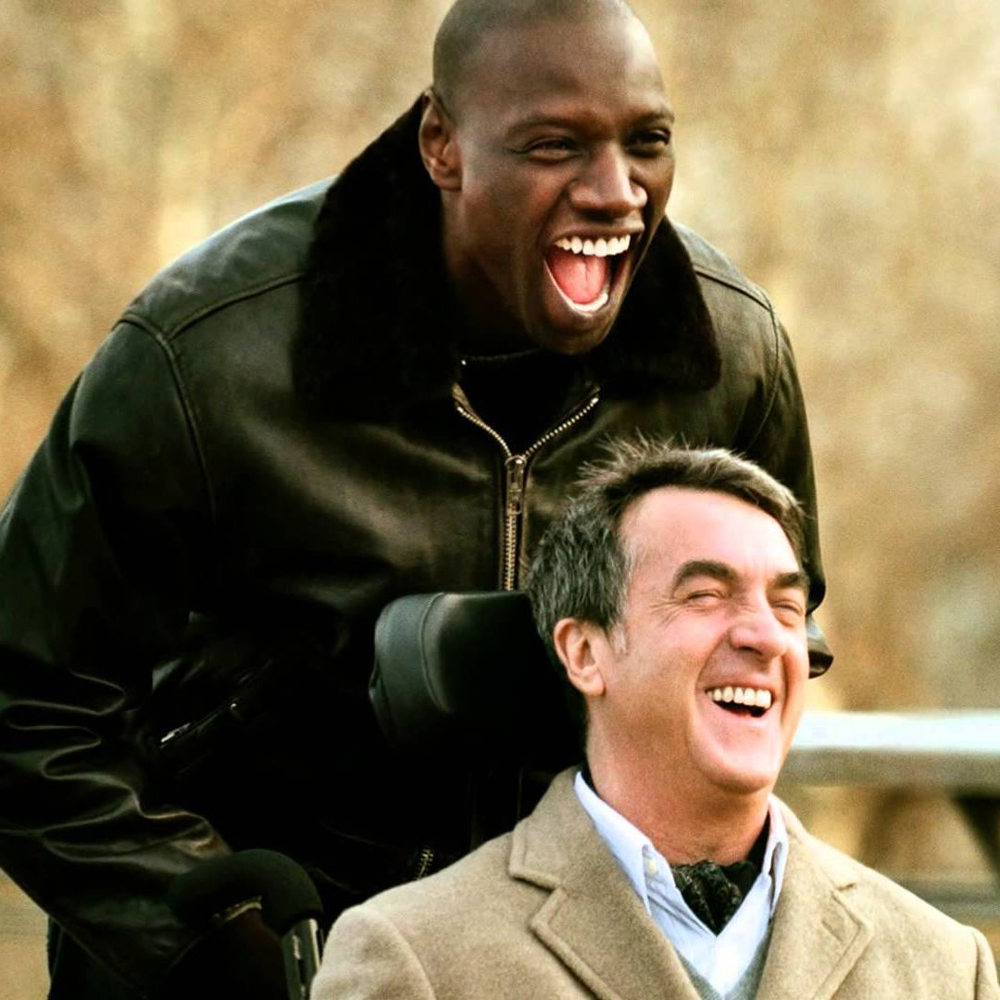

|  |
OSS 117En 1955, Le Caire est un véritable nid d'espions. Tout le monde se méfie de tout le monde : Anglais, Français, Soviétiques, la famille du roi déchu Farouk qui veut retrouver son trône, les `Aigles de Kheops', secte religieuse qui veut prendre le pouvoir. Le président de la République Française, Monsieur René Coty, envoie son arme maîtresse mettre de l'ordre dans cette pétaudière au bord du chaos : Hubert Bonisseur de la Bath, dit `OSS 117'. |
|  |
Les visiteursComment en l'An de Grâce 1112, le comte de Montmirail et son fidèle écuyer, Jacquouille la Fripouille, vont se retrouver propulsés en l'an 1992 après avoir bu une potion magique fabriquée par l'enchanteur Eusaebius leur permettant de se défaire d'un terrible sort. |
|  |
Les IntouchablesTout les oppose et il était peu probable qu'ils se rencontrent un jour, et pourtant. Philippe, un riche aristocrate devenu tétraplégique après un accident de parapente va engager Driss, un jeune homme d'origine sénégalaise tout droit sorti de prison, comme auxiliaire de vie à domicile. Pourquoi lui ? Tout simplement parce qu'il ne regarde pas Philippe avec le même regard de pitié que les autres candidats. |